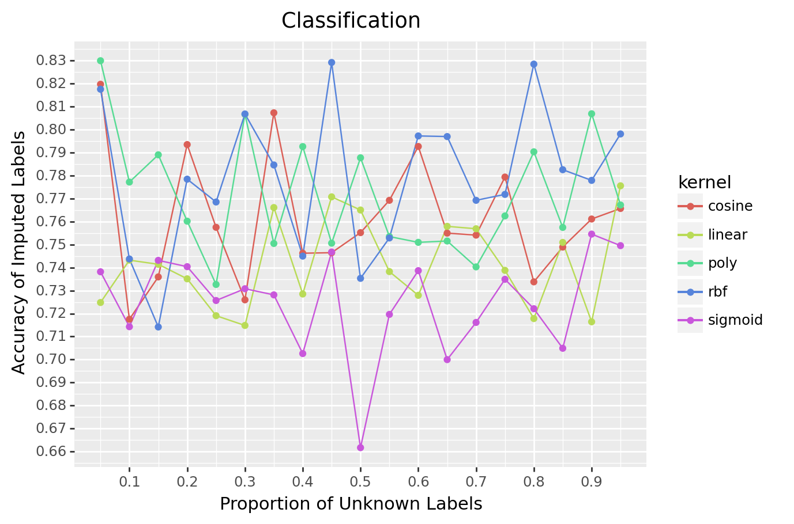
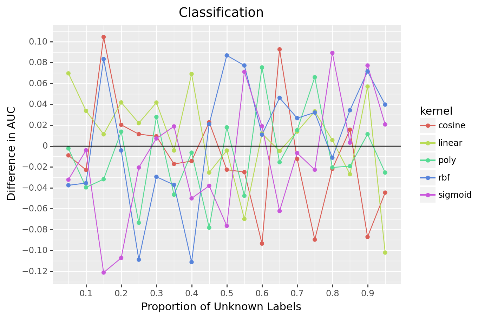
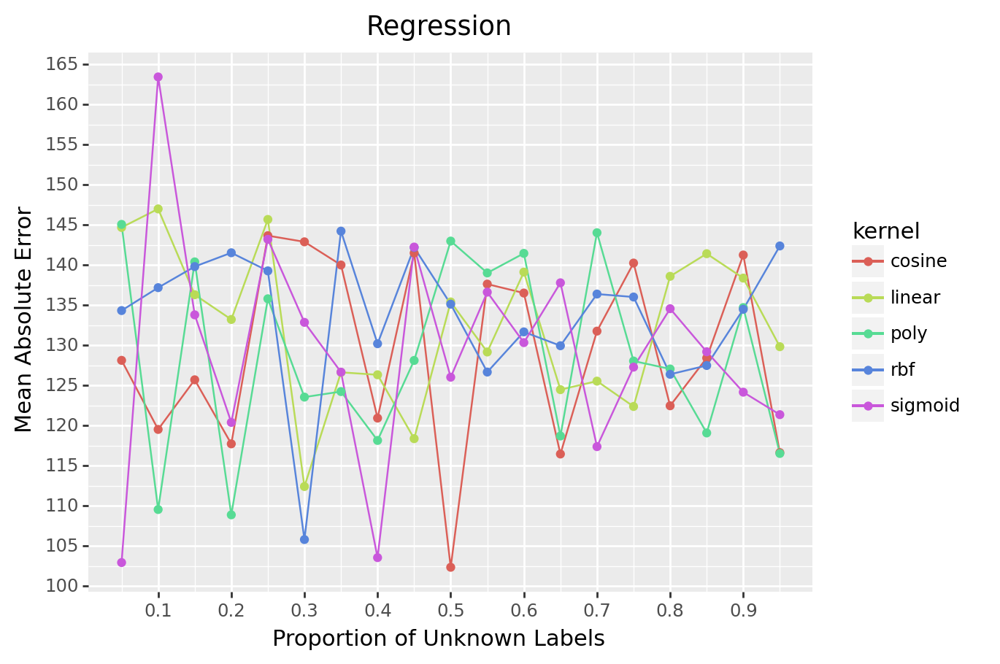
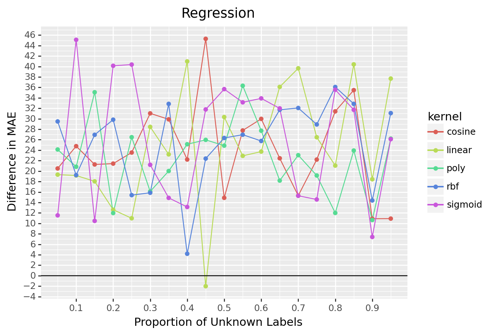

type prop kernel matchMetric modelMetric
0 classification 0.05 cosine 0.81968 -0.008973
1 classification 0.05 linear 0.72480 0.069621
2 classification 0.05 poly 0.82992 -0.002351
3 classification 0.05 rbf 0.81752 -0.037626
4 classification 0.05 sigmoid 0.73816 -0.032248Repo Overview
For all supervised machine learning projects, computing an accurate label is critical. It is fairly common to have bespoke data feeds for each client. If a client is simply not sending the required data, an accurate label is impossible.
Semi-supervised machine learning presents an alternative option. The problem client’s X matrix is combined with known clients’ X and Y matrices to impute labels. These imputed labels are combined with the known labels to build a better final model. At least that is the pitch of semi-supervised approaches.
In this repo, I test this claim with a few questions.
- How accurate are the imputed labels?
- Does imputing labels lead to a final model with better performance metrics?
- If most of the labels are unknown, does the approach still work?
- Does this approach work for both classification and regression?
Simulation Setup
Basic outline:
- Step 1: Create data. Either classification or regression.
- Step 2: Train a model on just known data.
- Step 3: Learn a latent variable representation using both labeled and unlabeled data’s X.
- Step 4: Impute labels using the closes five data points with known labels.
- Step 5: Compare imputation to true labels of unlabeled data.
- Step 6: Train a model with imputed labels added in.
- Step 7: Compare performance metrics of the two models (step 2 and step 6) on unseen data.
For each iteration, only fifty thousand data points are created (labeled and unlabeled). This process is repeated varying the proportion of data with unknown labels. Kernel PCA with different kernels is used at step three. Each combination of settings is repeated 5 times and an average is computed to reduce variability of metrics.
Results
Data
The first few rows look like
For classification, match metric is the accuracy of the imputed labels and model metric is the difference in AUC between the two models. For regression, match metric is mean absolute error of the imputed response variable and model metric is the difference in M.A.E. of the two models.
Classification
To end up with an improvment in performance metrics, the imputed labels need to be accurate. Does one kernel lead to more accurate labels than another?

<ggplot: (101908050701)>All kernels lead to similar accuracy. No kernel stands out as superior to any other kernel.

<ggplot: (101908057995)>In this graph, higher is better. Zero means no improvement in AUC.
Again, no kernel stands out as best. In general, this is a mixed bag. Sometimes the approached helped a great deal. Sometimes it hurt a great deal. Digging into 15%, the cosine similarity kenel improved increase AUC by .10. A major improvment. Holding data constant, the sigmoid kernel degraded performance by .12. A major decrease. Looking at the whole graph, no kernel is able to deliver consistent results. The semi-supervised is hit or miss for these data.
Regression
For regression, lower is better. Zero means perfect predictions.
Similar to classification, no kernel stands out.

<ggplot: (101909289615)>In the below graph, lower is better. Negative values mean a reduction in M.A.E. Zero means no improvement in mean absolute error.
The results are worse for regression. The semi-supervised approach failed the vast majority of the time. It only worked one time and this make be a fluke!

<ggplot: (101908690999)>Closing Thoughts
First, this project used scikit-learns make_classification and make_regression. Both of these functions make prediction problems that are difficult. Many real world problems are easier. Thus my poor results are problem specific and the semi-supervised is still worth trying.
Second, this project takes a roll-your-own approach to semi-supervised. Scikit-learn has added two semi-supervised learners and an additional meta estimator that turns any supervised approach (SVM, random forest, boosting, etc) into a semi-supervised approach. These tools are more robust than what I have done here.